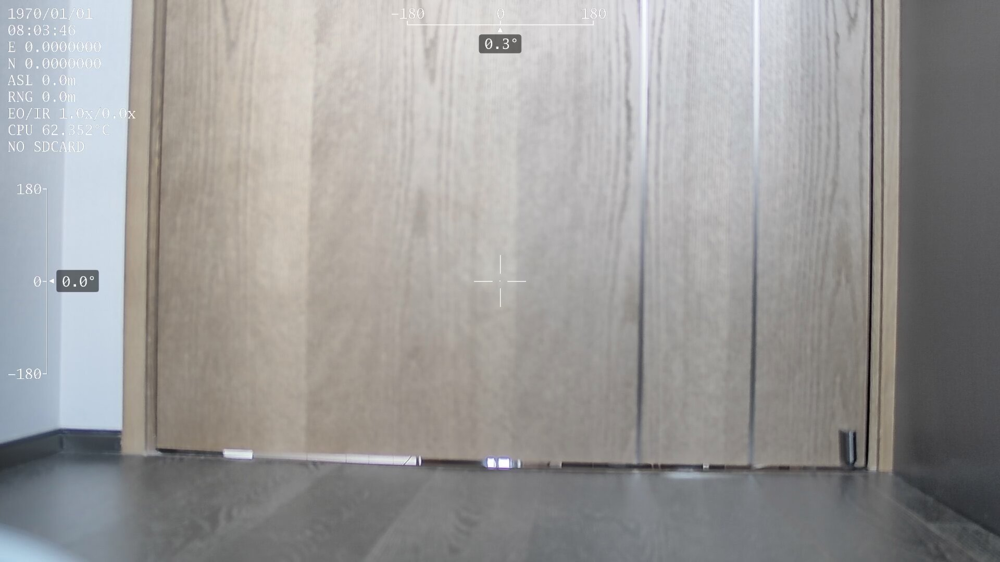
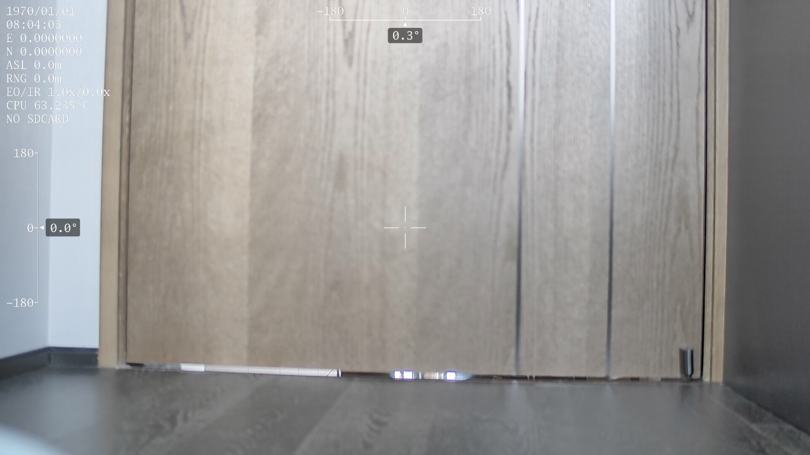
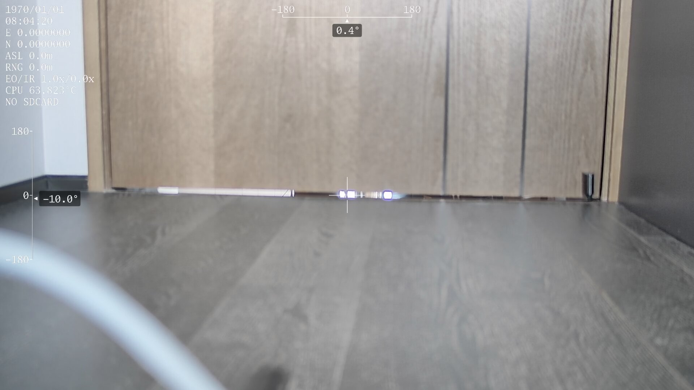
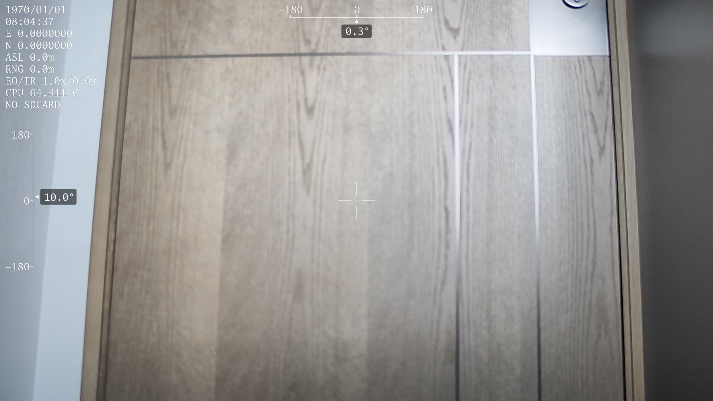
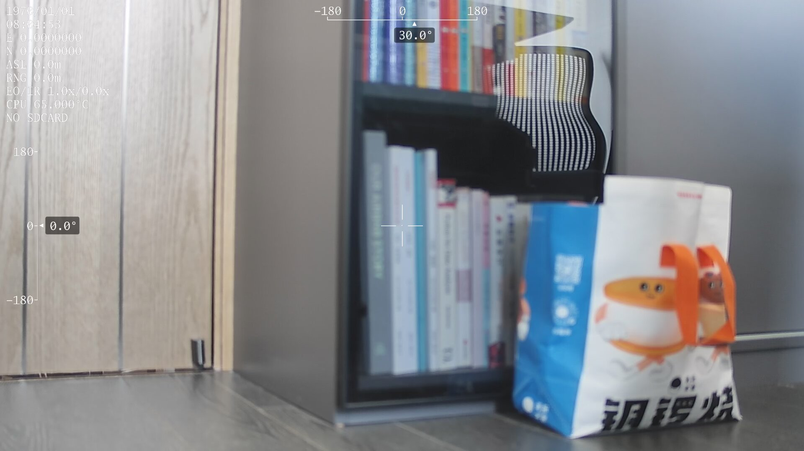
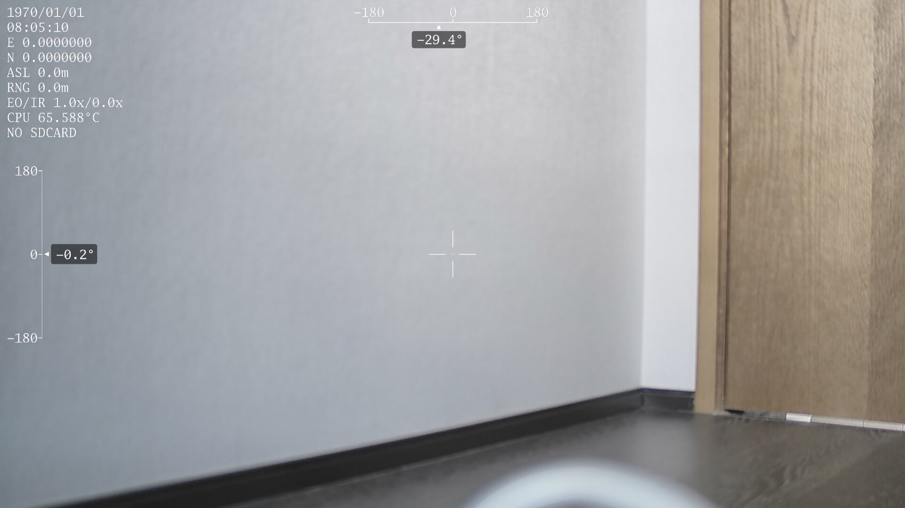
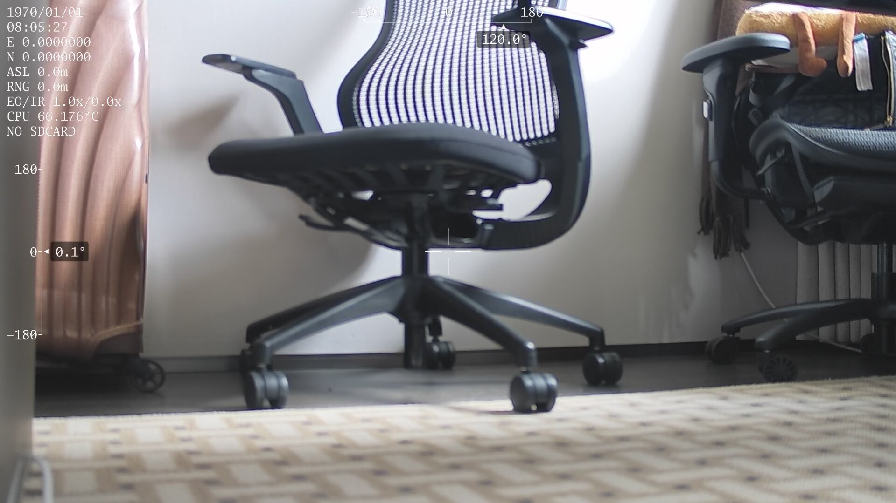
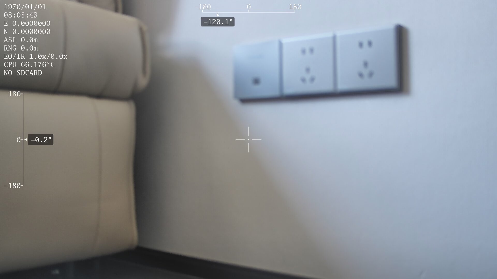
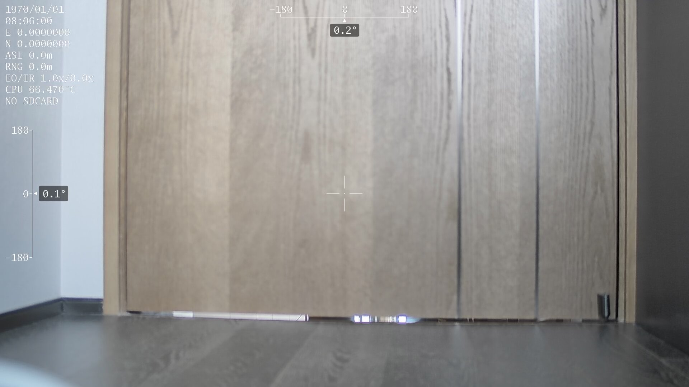

这次测试先保存 current_no_command，也就是当前物理安装后、不发送任何云台姿态命令的画面。随后依次测试 front、pitch、yaw、接近后向，以及边录边转。
规格表偏航范围为 ±140°，所以后向近似仍使用 ±120°。
原始日志：status.txt









录制过程中执行：front -> yaw +60 -> yaw -60 -> pitch -15 -> front。